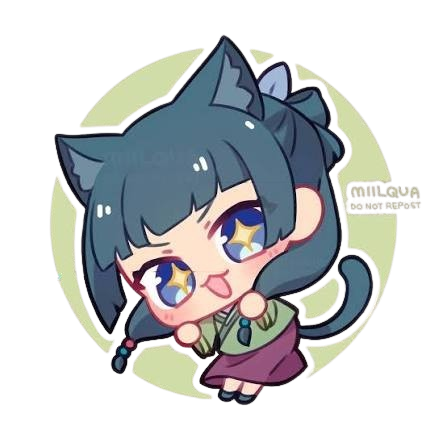
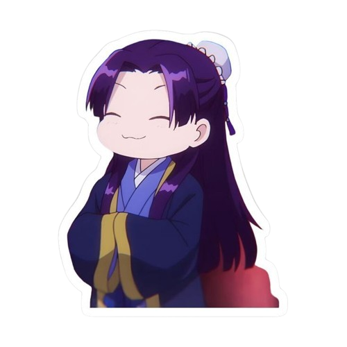
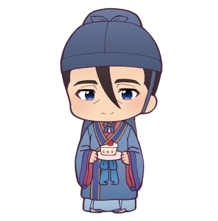

薬屋のひとりごと
Un misterio se disuelve como veneno en el vino…
薬屋のひとりごと · Kusuriya no Hitorigoto
Una joven boticaria, vendida como sirvienta al Harén Trasero del Emperador, destapa venenos, intrigas y secretos de palacio… con una curiosidad que podría costarle la vida.
物語
En una antigua corte imperial de inspiración china, Maomao, hija adoptiva de un boticario, es secuestrada y vendida como sirvienta de bajo rango al Harén Trasero, el recinto donde viven las concubinas del Emperador.
Decidida a pasar desapercibida y cumplir su condena en silencio, su conocimiento sobre hierbas, venenos y medicina la empuja, una y otra vez, a resolver extraños casos: intoxicaciones misteriosas, maldiciones de palacio y enfermedades que nadie más sabe explicar.
Su ingenio llama la atención de Jinshi, un bello y enigmático eunuco de alto rango, quien la convierte en su catadora personal y la arrastra a un mundo de política, romance no deseado y misterios cada vez más peligrosos.
人物

Protagonista · Boticaria
Antigua residente del barrio rojo, criada por su padre adoptivo boticario. Analítica, obsesionada con los venenos y desconfiada del amor, pero incapaz de resistirse a un buen misterio.

Eunuco de alto rango
De belleza deslumbrante y origen misterioso, administra el Harén Trasero. Queda fascinado por la inteligencia de Maomao y esconde un secreto que podría cambiarlo todo.

Sirviente y guardaespaldas
Fiel asistente de Jinshi, sereno y disciplinado. Actúa como la voz de la razón frente a las decisiones impulsivas de su señor.
Consorte imperial
De origen extranjero, cálida y perspicaz. Una de las favoritas del Emperador y protectora de Maomao dentro del harén.
Consorte imperial
Elegante y orgullosa, la primera consorte de mayor rango cuando comienza la historia. Su salud debilitada desata el primer gran misterio de la serie.
Estratega militar
Excéntrico genio de las estrategias y los juegos, ligado al pasado de Maomao de una forma que ella prefiere ignorar.
後宮
Un microcosmos de poder, belleza y peligro dentro de los muros de palacio.
Un vasto palacio de inspiración en la China imperial, regido por rígidas jerarquías, ceremonias y una política tan afilada como cualquier daga.
Gyokuyou, Lihua, Lishu y Ah Duo compiten, cada una a su manera, por el favor del Emperador y la estabilidad de su posición.
El antiguo barrio rojo donde Maomao creció junto a su padre, aprendiendo medicina, venenos y el arte de leer a las personas.
物語の道
Maomao entra como sirvienta de bajo rango y, sin buscarlo, resuelve el misterio que envenena lentamente a los hijos del Emperador. Su talento la pone en la mira de Jinshi.
Nuevos casos llevan a Maomao fuera de los muros del harén, revelando más sobre su propio pasado, la extraña familia Lakan y las tensiones políticas que amenazan el trono.
La historia continúa expandiéndose desde las novelas ligeras originales, con más secretos de la corte esperando a ser destapados.
豆知識
詳細
Natsu Hyuuga
OLM & TOHO Animation
2023
Misterio, Drama, Histórico